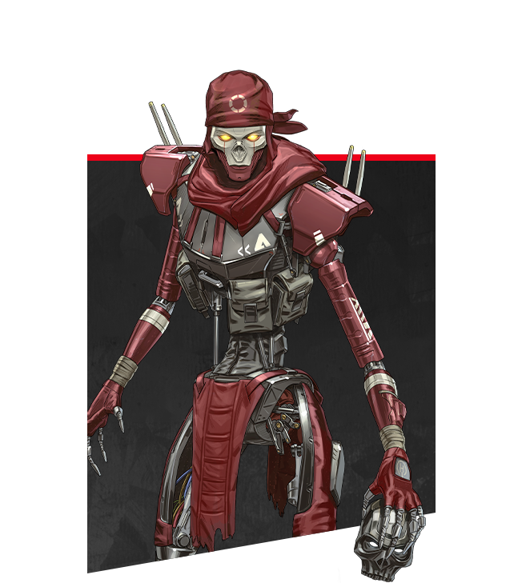
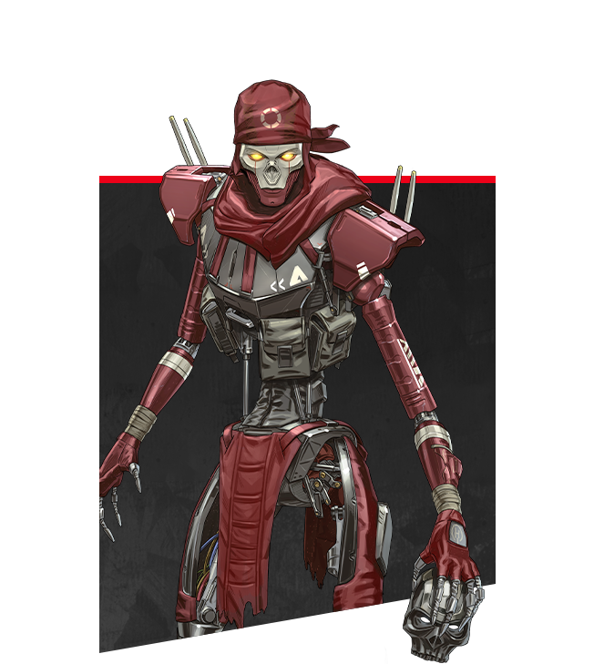

1 キャラクター
1.1 キャラが変わると何が変わる？
キャラクターは、見た目だけが違いではない。キャラごとにアビリティ・視点・足音など、異なるところが沢山ある。特にアビリティでキャラを決めることになると思うが、縛られすぎず好きなキャラを使うというやり方でも十分okだ。一番は使いこなせるかであるため、使えないから使わないのではなく、使えないから使っていこう位の精神でいこう。
1.2 キャラのタイプは４つある
キャラクターの能力は多種多様であるが、大まかに４つのタイプに分類されている。その４つのタイプを、それぞれ解説する。
-
オフェンスタイプ
攻撃タイプです。アビリティが攻撃向けとなっています。キルするのに有利なアビリティは、あればあるほどチームは攻撃してポイントを得やすくなります。
タイプキャラクターは、- レイス
- バンガロール
- ミラージュ
- オクタン
- レヴナント
- ホライゾン
となります。チームに１人はほしいキャラクターたちです。また、左の画像から各キャラクターの解説ページに飛べます。
タイプキャラクター


 


-
リコンタイプ
偵察に適したタイプです。リコンタイプ特有の機能として、フィールドにある調査ビーコンから次の安地の場所を調べることができるものがあります。ランクマッチではかなり強力で、勝敗に大きく関わる立ち回りにとても貢献します。 タイプキャラクターは、
- ブラッドハウンド
- パスファインダー
- クリプト
となります。この中で、ブラッドハウンドはオフェンスタイプでもいいのではないか、と思うほど攻撃型のアビリティです。敵の位置を把握した状態で奇襲するのか、知らない状態でするのかでは大きく難易度が変わるため、攻撃につなげやすいリコンとして非常に利用されています。
タイプキャラクター


-
ディフェンスタイプ
戦闘での耐久が得意なタイプです。アビリティは自分や味方を守るタイプのものが多いです。防衛に適した盾のようなものなどです。チームキャラクターは、
- ジブラルタル
- コースティック
- ワットソン
- ランパート
となります。この中で、ジブラルタルとコースティックは鉄壁という機能を持っています。これは、大柄で被弾しやすい代わりに、被ダメージが15%減少するという内容です。また、ワットソンは戦術を重視した立ち回りをしないと、そのアビリティを十分に生かすことができない上級者向けのキャラクターです。電子フェンスを設置し、移動を制限するなどの使い方があり、プロゲーマーの試合ではよく見るのですが、一般のプレイでその強さが見れることはあまりありません。
タイプキャラクター


-
サポートタイプ
チームメンバーのサポートに特化したアビリティを持つタイプです。チームキャラクターは
- ライフライン
- ローバ
となります。しかし、２人のキャラのうち、ライフラインはそのまんまのサポートとして回復したり、蘇生時バリアを展開出来たりしますが、ローバは武器を遠くからでも入手できるという、また違ったアプローチのサポートとなっています。
タイプキャラクター


1.3 パッシブアビリティとは
パッシブアビリティとは、プレイヤーがボタンを押したりしなくても、自動で発動するアビリティのことです。ブラッドハウンドなら敵の残した痕跡が見える、などです。
1.4 戦術アビリティとは
戦術アビリティとは、プレイヤーが任意のタイミングで発動させるアビリティです。キャラによって大きく異なりますが、使ってからのリチャージがウルトほど長くないのは共通です。
1.5 アルティメットアビリティ(ウルト)とは
アルティメットアビリティとは、戦術アビリティと同じくプレイヤーが任意のタイミングで起動できるアビリティです。しかし、リチャージが長く、能力も大掛かりです。敵に直接攻撃できるものもあれば、サポートであったり、偵察であったりします。使うタイミングでは、状況を一転させる可能性があります。また、アルティメット促進剤というアイテムでリチャージを短くすることができます。
2 ブラッドハウンド
ブラッドハウンドは、リコンタイプのキャラクターです。しかし、ブラッドハウンドのアビリティはどれも攻撃するのに有効で、オフェンスタイプとの相性がいいです。
3 ジブラルタル
ジブラルタルは、特に耐久が高いキャラクターです。また、ドームを張って敵の銃弾を防ぐことができるアビリティがありますが、これはドーム内での仲間の蘇生も早くなります。味方の窮地を一気に回復することができます。
4 ライフライン
ライフラインは、味方の生存性を大きく高めるキャラクターです。D.O.Cボットに蘇生を命令でき、見方を蘇生しながら戦うことができます。また、自分、味方、敵誰もが使える回復機能も持っています。
5 パスファインダー
パスファインダーは、ジップラインを自分の好きなように引ける機能があります。しかし、それ以外のアビリティは正直微妙といったところです。しかし、小柄という特性を持っているので、被弾率が低いです。しかし、味方を敵から逃がしたり、高所を無理やりとったりと、戦略の幅が広がります。
6 レイス
うまい人の使用率堂々1位のレイスです。虚空に入る、とよく言ってるのは、このキャラの戦術アビリティです。また、ポータルをつなげて味方を救出したり、攻め込むときの布石にもできるウルトがあり、かなり優秀なキャラクターです。
7 バンガロール
煙幕を使えるオフェンスタイプのキャラクターです。煙でも敵を視認できるブラハと相性がいいです。また、ウルトがゴリゴリの攻撃タイプなので、かなり攻め込んだ戦いができます。また、パッシブの駆け足もなかなかに強力です。
8 コースティック
防衛について、最強説があるほど強いキャラクターです。ガス爆弾を設置でき、敵が近づくとダメージを受けて身動きが遅くなります。ウルトはそのガスのグレネードです。かなり強力ですが、ダメージを食らわないにしても、味方の視認性は低下するので、ガスの置きすぎは嫌われます。
9 ミラージュ
ミラージュはオフェンスタイプのキャラクターですが、攻撃といった攻撃ではないかもしれません。自分と同じ見た目のデコイを使い、敵を翻弄しながら戦う戦術性のあるキャラクターです。しかし戦うときデコイが活躍するのは、攻める時ではなく、味方を蘇生するときです。味方を蘇生するとき無防備になるのは他と変わりませんが、ミラージュは透明になることができます。味方もです。そのため、敵にばれないように蘇生できる可能性があります。
10 ワットソン
かなり上級者向けのアビリティを持つキャラクターです。電子フェンス、インターセプターは、かなり戦略性によった性質をしています。まず、電子フェンスは敵が当たるとダメージを受け、動きが鈍くなり、仕掛けた本人がそれに気づきます。また、そのフェンスのノードは1点につき3つのノードと接続可能です。敵がノードを撃てば破壊されてしまうため、位置的に破壊されない所に設置しなくてはならず、また相手の移動をうまく阻害するようにしなくてはなりません。そのような問題が多くあり、かなり上級者の、余裕のある人しかできないプレ－となります。また、インターセプターパイロンはトロフィーシステムのような働きをします。近くに飛んできたグレネード、レヴナントのアビリティ、空爆などを自動で撃墜し、近くのプレイヤーの仲間、設置者のシールドを少しずつ回復します。かなり強力ですが、設置タイミングをうまく合わせるのはなかなかに能力を必要とします。
11 オクタン
オクタンは、良くも悪くもシンプルな能力です。まず、ほかのキャラとは違って、戦術アビリティにリチャージがほぼありません。その代わりとして、体力が少し消耗します。しかし、パッシブでそれが徐々に回復します。その戦術アビリティとは、だた足がくそ速くなるというものです。ウルトも似たような能力で、ジャンプできるトランポリンを設置するというものです。敵に奇襲を仕掛けて離脱したり、建造物に立てこもる敵を取り囲むため屋上を占領するために使用したりします。
12 クリプト
クリプトは、キャラの中でも特に特殊なアビリティを持っています。それはラジコンのようなドローンを利用して偵察、攻撃を行う能力です。戦術アビリティのドローンは、かなり遠くまで飛べるラジコンのようになっていて、遠くの敵を見つけたり、敵同士の戦闘を偵察したり、ウルトを使って干渉したりなど、様々な使い方があります。遠くの敵の戦闘や状況を確認できるので、戦略の確実性が向上します。また、パッシブ機能で、ドローンの近くの敵を自動でマーキングし、建物を貫通して場所を確認できるようになるほか、味方もその恩恵を受けることができます。
13 レヴナント
レヴナントはレジェンドの中でも珍しく悪役としてのポジションにいます。皆に嫌われているのがゲーム内でのいちいちの会話で確認できます。しかし、レヴのウルトはかなり強力です。デストーテムとは、ウルトを使用することで出現するものです。これにプレイヤーが触れると、アーマーが無効になります。その代わり、その状態で倒されても死なずにそのトーテムに帰ってくるというものです。これはレイスのウルトと同時に使うとかなり強力な攻勢が仕掛けられます。死ぬ心配がないので、かなり無理をした攻撃が可能で、かつ、その第1波で疲弊した敵を第2波として生身で攻撃しに行くというやり方もあります。また戦術アビリティのサイレンスも強力で、当たった敵のアビリティを一定時間使用不可能にします。敵の戦略を一気に崩すことができます。
14 ローバ
ローバは、珍しいサポートタイプのキャラクターですが、そのサポートとはかなり攻撃的なサポートです。それは、ブラックマーケットブティックと言って、周りの武器を遠くからとれる、というものです。2つまでしか取れませんが、銃弾はカウントに入らないのでいくらでも取れます。また、ローバのウルトはかなり早くたまるので、かなりの頻度で使えます。戦術アビリティは、サポートではないです。遠くに投げたリングの落下地点に瞬間移動できるというものです。
15 ランパート
ランパートは、ワットソンよりは防衛向きで、ジブラルタル、コースティックよりかは攻撃に適しているディフェンスタイプです。まず、戦術アビリティの設置型の盾は、内側からのみ弾が通るというものです。また威力も向上します。しかし、耐久性は高くはありません。しかし、何個も置けるので要塞を作って敵を足止めすることができます。また、ウルトはミニガンを設置するというものです。威力が最高で、一瞬で敵が溶けます。これに盾を使って防衛と攻撃を一度にできるというよくわからない能力を持っています。また、LMGの装弾数、リロード速度が向上するというパッシブアビリティも、盾と相性が良いです。
16 ホライゾン
ホライゾンは、最近出たキャラクターです。オフェンスタイプです。特に、ウルトのブラックホールが攻撃に向いています。というのは、起動したブラックホールの近くでは戦いづらくなり、また最後の爆発で地味にダメージが入ります。また、戦術アビリティの重力操作もかなり強力で、レイスの虚空のように利用してもいいし、オクタンのジャンプパッドのようにも利用できます。またかなりリチャージが短いので、連発できます。敵に投げるのも有効です。まだまだ戦略性の開拓の余地のあるキャラクターです。